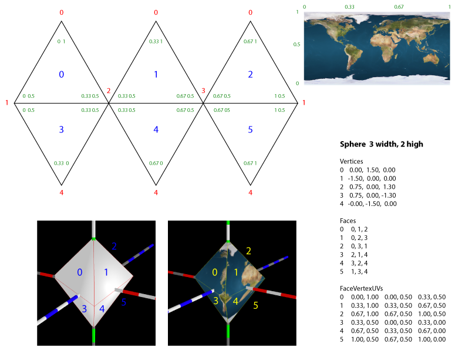

TIFF Mapper
Introduction
TIFF Mapper is a relatively simple tool that uses the TIFF Reader to open and load a file, then loads the data (16-bit integers) from the file one line at a time. The data is then used to build a three.js Geometry by explicitly creating all the Vector3, Face3 and FaceVertex UVs. Let's look at some samples, then cover how it was done.
Sample Images
One can also optionally load an image which can be draped onto the mesh.
A fully functional demo (assuming your browser supports JavaScript and WebGL) is here. Be patient, it takes a few seconds (depending on your hardware) to load and render the model. You can zoom in and out with your mouse (or trackpad). The exaggeration is 100x.
Here is a sample view with the elevations exaggerated 100x. If you don't exaggerate the elevations the earth is almost a smooth as a ping-pong ball. See additional discussion here.

Here is another sample, with the same exaggeration as used on the bronze earth sculpture Geo-F/X helped construct currently on display at the New York Museum of Natural History. See here for more details.

Finally, here is a sample with no exaggeration at all. At this scale, the height of Mount Everest on a 12" (30 cm) globe would be just over 0.01" (0.4 mm). With no exaggeration one might as well use a smooth sphere.

How The Demo Was Made
Getting The Data
First off, we need to get a data set. The source is the GLOBE project. The 5-minute GeoTIFF is a complete DEM (digital elevation model) of the entire earth, including the ocean bathymetry and the ice caps on Antarctica and Greenland. The resulting data set is 21601x10801 data points - a whopping 233 million data points or over 466 MB uncompressed! A little large to load into three.js in JavaScript, so we need to resample it down to something a little smaller. I used to have my own tools, written in C++ with LibTIFF and GeoTIFF to do this but nowadays I use QGIS, which does a good job.
After a little experimentation, I found that a file about 1/15 that size - 1440x720 data points gave good results and didn't crash the browser :-)
Rendering the GeoTIFF
The first step is initializing the scene (GFXScene) and setting up our lights:
var gfxScene = new GFX.Scene( {
cameraPos : [4, 3, 4],
controls:true,
defaultLights:false,
displayStats:true});
gfxScene.addLight( 'ambient', { color:0xffffff, intensity : 0.75 });
gfxScene.addLight( 'directional', { color:0xffffff, intensity:0.25, position:[30,0,0]});Then we instantiate the TIFF Reader, passing in the GeoTIFF file to be opened.
function initializeDemo() { tiffReader = new TIFFX.TIFFReader("../data/ETOPO_15.tif", tiffReady); } /** * Called when the TIFF is loaded and ready to be used */ function tiffReady() { tiffMapper = new TIFFX.TIFFMapper( gfxScene, tiffReader ); tiffMapper.createGlobe("../data/8081-earthmap8k.jpg"); }
Note that we pass the function tiffReady to the TIFFReader. That will be called when the TIFF is loaded. It has to be done that way because the loading of resources is done asynchronously. Then, in tiffReady we instantiate the TIFFMapper to which we pass the GFXScene object and the TIFFReader. Then we call createGlobe where all the heavy lifting is done.
The first step is to build all the vertices.
var lat = 90 * Math.PI / 180.0;
var vec;
for (var i=0; i < height; i++ ) {
var rasterWindow = [0, i, width - 0, i+1]; // left, top, right, bottom
rasterData = image.readRasters({window: rasterWindow});
var lon = 0;
for ( var j=0; j<rasterData[0].length; j++ ) {
// instead of using the last *real* value, use the first again so it meshes
if ( j === 0 )
k = rasterData[0].length-1;
else
k = j;
var radius = SCALE_FACTOR *
(rasterData[0][k] / 1000.0 * EXAGGERATION + EARTH_DIAMETER) / EARTH_DIAMETER;
// this transform from https://stackoverflow.com/questions/28365948/javascript-\
// latitude-longitude-to-xyz-position-on-earth-threejs
var phi = Math.PI/2 - lat;
var theta = Math.PI + lon;
x = -(radius * Math.sin(phi) * Math.cos(theta));
z = (radius * Math.sin(phi) * Math.sin(theta));
y = (radius * Math.cos(phi));
this.globeGeom.vertices.push(new THREE.Vector3(x, y, z));
max = Math.max(max, rasterData[0][j]);
min = Math.min(min, rasterData[0][j]);
lon += deltaLon;
}
lat -= deltaLat;
}
This is pretty straightforward, it just walks through the GeoTIFF, reading one line at a time and converting each data point to a Vector3 and push the vertex into the geometry. However, there are two aspects wothr noting.
First, the transform has two parts. The first two lines convert latitude and longitude to spherical coordinates (theta and phi). The radius is computed from the earth's radius plus the altitude of the data point. This is not strictly speaking completely accurate as we should probably project the point on to the WGS84 ellipsoid. But the difference between that ellipsoid and a sphere is very small (<0.02%) so we just neglect it. Then the speherical coordinates are converted to an XYZ position in 3D space.
Second, when we reach the last data point in each row, we discard that value and use the first value again. This way the mesh is perfectly matched. Otherwise there will be a small but perceptible "rip" in the mesh. Note that this also could be fixed by generating another Face when we generate the Faces, but that is a bit more complicated. Perhaps later.
Then, the Faces and the FaceVertexUvs have to be generated:
for (var i = 0; i < height - 1; i++ ) {
var i0 = width * i;
var i1 = width * (i + 1);
// note that they y-coord (i.e. the 'v' of uv) must start at coordinate 1.0 and descend
// since the UV coordinate system has the origin at the lower-left, not upper-left
var i0v = 1 - i / height;
var i1v = 1 - (i+1) / height;
for (var j = 0; j < width - 1; j++) {
var v0 = i0 + j;
var v1 = i0 + j+1;
var v2 = i1 + j+1;
var v3 = i1 + j;
// note that the faces MUST be in CCW winding order!
this.globeGeom.faces.push(new THREE.Face3(v0, v2, v1));
this.globeGeom.faces.push(new THREE.Face3(v0, v3, v2));
var j0u = j /width;
var j1u = (j+1) / width;
var v0uv = new THREE.Vector2( j0u, i0v );
var v1uv = new THREE.Vector2( j1u, i0v );
var v2uv = new THREE.Vector2( j1u, i1v );
var v3uv = new THREE.Vector2( j0u, i1v );
this.globeGeom.faceVertexUvs[0].push([v0uv, v2uv, v1uv]);
this.globeGeom.faceVertexUvs[0].push([v0uv, v3uv, v2uv]);
}
}
this.globeGeom.computeFaceNormals();
this.globeGeom.computeVertexNormals();Two aspects to note:
- The y-coordinate of the uv coordinates must start at 1 since the origin of the uv coordinate system is at the lower-left, not the upper-left as the GeoTIFF data is
- When the faces are constructed, the winding order of the face must counter-clockwise.
Here is an image I put together to help myself understand how all the geometry of mapping the image to a globe (or any other shape) should work:

Click on the image for a full-size version.
Finally, the image to drape on the model is loaded:
this.globeMat = new THREE.MeshPhongMaterial({color: '#eeeeee'});
if (this.globeImage !== undefined ) {
var textureLoader = new THREE.TextureLoader();
var pThis = this;
textureLoader.load(this.globeImage, function (texture) {
pThis.globeMat.map = texture;
pThis.globeMat.needsUpdate = true;
});
}Note the use of pThis. This is needed since inside the load function 'this' points to the window object.
And that's it. You can see a working example of the demo by clicking on this link.
Acknowledgements
The GeoTIFF data was obtained from the GLOBE project. The high-res earth images were obtained from JHT'S Planetary Pixel Emporium. The TIFFReader is based on the geotiff.js library of Fabian Schindler (constantinius). The sources for both the TIFF Reader and TIFF Mapper are freely available under the BSD License via rkwright at github. Feel free to contact me directly at rkwright@geofx.com